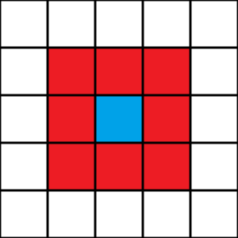

Rules
Rule shorthand: A/B
A - each digit represents a number of neighbors for which a 'live' cell will continue onto the next generation, for any other number of neighbors the cell will 'die'.
B - each digit represents a number of neighbors for which a 'dead' cell will become 'alive' in the next generation.
Neighborhood
This program uses whats known as the Moore neighborhood (behavior is determined by the states of all 8 surrounding cells).

Grid
The grid in this program does not wrap, therefore any live cells that reach the boundaries die.